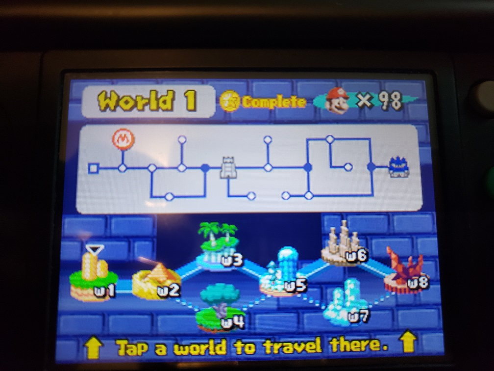
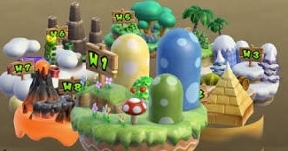
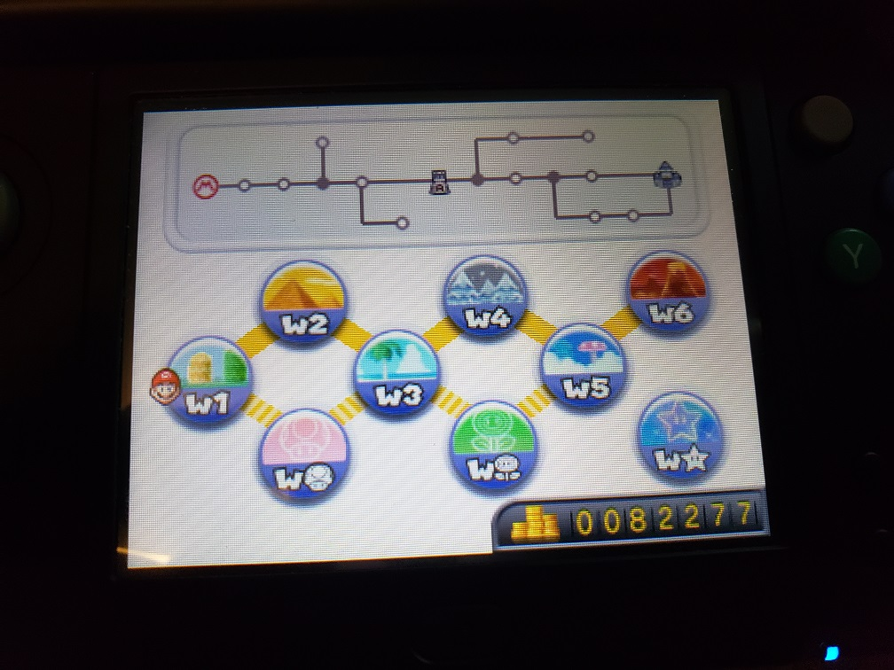
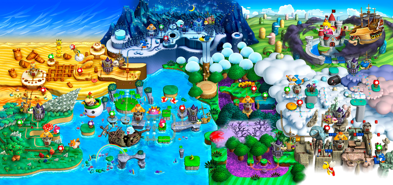

Much like the first Super Mario Brothers, the manual of Super Mario Bros 3 (SMB3) is pretty informative on what’s going on! Bowser in that game attacks the Mushroom World (aka kingdoms surrounding the Mushroom Kingdom) with the Koopalings, his ‘7 children’ as he puts it. Grass Land is world 1 with its own unique landscape and ruler separate from the Princess and the Mushroom Kingdom. The Gameboy Advance remake implies the close proximity to the Mushroom Kingdom as well. Either way, you have the eight worlds which the manual even spells out for you.
Let us now consider how Mario games follow patterns started by SMB3 to this day. Aside from the fact that eight seems to be the magic number, the stereotype is ‘grass land’, ‘desert land’, ‘water land’, ‘ice land’, ‘forest land’, ‘sky land’, and a ‘Dark Land’ in a loose order. The grass and Bowser lands are always the opener and closer of the games, ignoring any bonus or special worlds. There are exceptions and of course even some archetypes I left out. New Super Mario Bros (NSMB) as a series is sure to include mountain themed lands, despite SMB3 never having one. NSMB, the DS, Wii, and 3DS versions all share a common detail- they consider or at least heavily imply that the World 1 grass themed land is the Mushroom Kingdom. They plainly feature Peach’s Castle as Mario’s starting point. In games like NSMB Wii you can even enter the castle!

Each world of course is in the same ‘neighborhood’ of the Mushroom World and the order of the Koopalings taking over the land becomes the un/official order of their ages. (To elaborate, Ludwig is oldest and Larry youngest as confirmed but the ages of the middle Koopalings isn’t. Fans often assign the order to align with SMB3, how we arrive at ‘quirks’ such as Morton being second youngest and Lemmy second oldest despite appearance. It’s fun!) Image credit to TaiFerret.
Notice how near integral the worlds became to some of the Koopaling’s aesthetics but not others. Some Koopalings directly relate to an archetype to the point where it’s noticeable if they are taken out of it. Wendy is the strongest example, the ‘Ocean Princess’ but smaller arguments can be made for others.
-For the Nintendo DS, a return to form for the franchise at the time. A new 2D Mario platformer that wasn’t a remake of anything! It does not feature koopalings and it came out a little before their massive revival in modern games but it does take some cues from SMB3 as well as set the precedent for the NSMB franchise. Note that the names assigned are unofficial. Images are mine.
The first three worlds rather blatantly reference SMB3 and in a way so do the rest of the worlds, simply with the world order shuffled. Giant Land could be thought of somewhat as a forest. (And in NSMB Wii Iggy would be in control there as he was in Giant Land. More later). Ice world is an ice world just as World 5 instead of 6. Mountain land is an original concept while a Sky and Dark land are carryovers. The real points of interest here is that this is the only game with original bosses, something I wish would have shown up a lot more- I’m saying that even as a Koopaling fan! The boss choices are odd in a good way. Also, Bowser is a first world main boss very uncommonly, necessary for what they’ll do for him late game.
-Famous for building on concepts from the DS game, giving us 3D looks and updated designs for the Koopalings, and having insanely zany multiplayer modes. With Bowser’s kids/henchmen back on the scene they occupy the lands in ways that call back to their SMB3 roles, at least sometimes.
I don't know why it's tiny either.
Larry leads the pack and Ludwig ends it before it’s Bowser’s front door. Or is it? Some shuffling is done. Morton takes to the mountains instead of the desert, leaving Roy to take his place. Iggy takes the forest/poison world as there is no Giant Land. Wendy remains with the water, and Lemmy with ice. Ludwig takes the penultimate world which in this game is the sky themed land.
-The world structure gets interesting. Only six are given numbers and the rest are item themed as if they are bonus worlds, yet Koopalings occupy them all the same. The only actual bonus world is World Star, as the player fights the bonus boss of Dry Bowser and must use star coins to get it. True, warp cannons must be reached to get to the item worlds, but they were needed in NSMB also and I don’t consider those bonus worlds because of that. Images are mine.
Well this is easy. The only common denominator is Ludwig occupying the Sky world and Wendy’s world having some beach/ocean theme to it. The themeless item worlds always confused me when younger, though looking back I think it was mostly an excuse to be able to throw a series of levels with drastically different themes together in one world without it seeming too strange.
-More of the same but in HD! And not in an insulting way either. Of note here is that the worlds have actual names while still nailing the NSMB archetypes.
Sometimes we’re so close- but then not! Lemmy leads with the grass land equivalent. Acorn Plains is within view of the Mushroom Kingdom (or at least Peach’s Castle) but not the same land, making this the first NSMB game to make the distinction again like SMB3 did. We have a winner folks! Morton returns to the desert like in NES days but Larry takes the water world and Wendy the ice. Ice is water I guess so.. I’ll allow it. Iggy again has a forest/poison themed world like NSMB Wii. Roy takes the mountain world because for some reason he and Morton like to swap places when it comes to that. Ludwig remains prince of the sky and Bowser obviously occupies the dark/ lava world.
This article came to be because of two ideas in my head, that the first grass world in your typical Mario platformer was the Mushroom Kingdom and that the pecking order of the Koopalings was mostly stagnant. These ideas weren’t wildly off and in some instances true, but further investigation revealed so much more! In conclusion, the Mushroom Kingdom took on world 1’s role in NSMB and onward frequently but it was not always that way. Sometimes NSMB will reference the SMB3 order, but other times completely avert it. While the same level tropes are sure to show up, some inspired by older games, others original, Nintendo will shuffle them up order and boss wise seemingly at random, or do something different altogether.